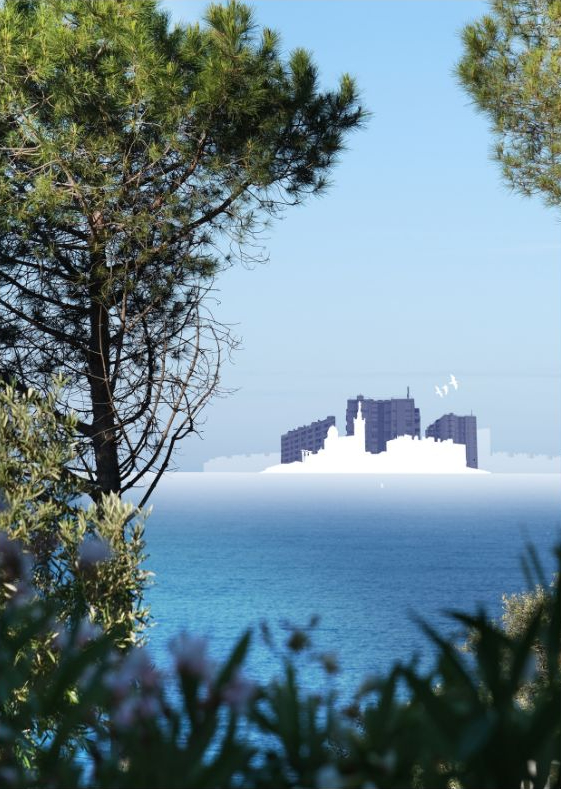
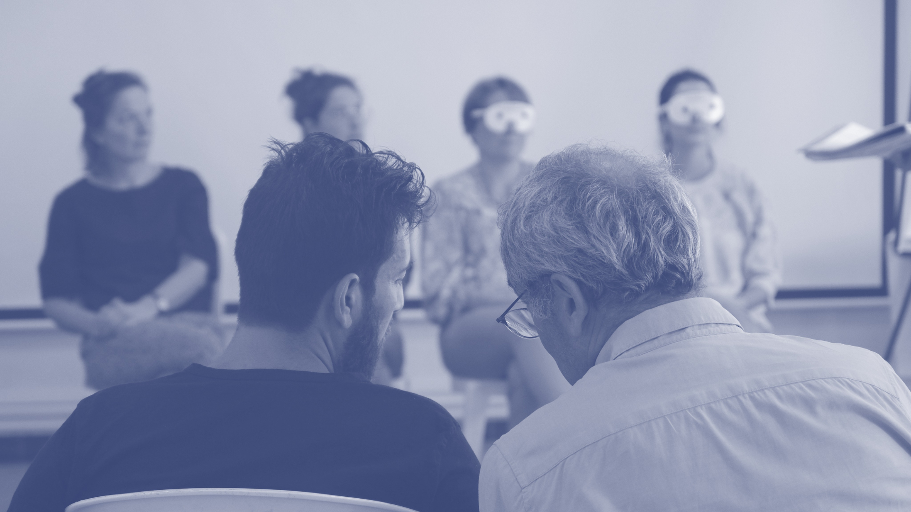

En 2025, Massajobs a fêté ses 10 ans de présence dans les quartiers de Marseille. Pour l'occasion, nous avons voulu mettre en mots ce que nous faisons, pourquoi nous le faisons, et comment. Une invitation à entrer dans notre manière d'accompagner les personnes vers l'emploi.

Cliquez sur l'une des thématiques pour explorer le contenu.

Notre manière de nous tenir face à l'autre. Avant les techniques, c'est elle qui détermine la qualité de la relation : facteurs clés, obstacles, et nos rapports au pouvoir, au savoir, à l'action et au temps.
Lire la page →Ce que nous travaillons concrètement avec la personne : son cadre de référence, ses ressources cachées, ses motivations, son projet. Les contenus sur lesquels portent nos entretiens.
Lire la page →Comment nous organisons l'accompagnement dans la durée : la primo-rencontre, les premiers rendez-vous, l'ouverture, l'engagement, le suivi.
Lire la page →Les techniques concrètes que nous mobilisons en séance : l'écoute, la méta-communication, la reformulation, le questionnement, les questions à échelle, la démarche de valorisation.
Lire la page →
Comment nous sortons de nos bureaux pour aller au-devant des personnes les plus éloignées de l'emploi : philosophie, posture, et pratiques concrètes — porte-à-porte, déambulation, partenariats, accueil inconditionnel.
Lire la page →Nous formons les professionnels de l'accompagnement qui veulent passer d'une logique d'expertise à une logique de pouvoir d'agir.
Découvrir notre offre de formation